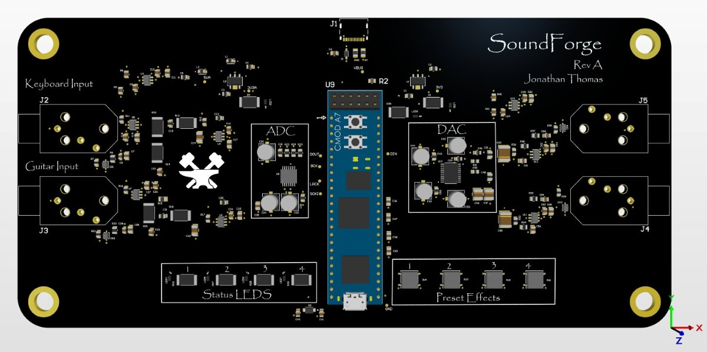

Project
SoundForge

SoundForge is the big project I started the summer after my sophomore year. The idea was to build an effect pedal to replace all other effect pedals. Big pedalboards and loads of sound equipment is cool, but I was getting irritated by the cost of guitar pedals and having to deal with all those wires. So I decided to build a digital pedal on a single FPGA board that can implement all of those effects digitally.
It's an FPGA carrier board that lets a keyboard or guitar signal be transformed by any audio effect the user designs on the FPGA. It drew on all the op-amp and circuit knowledge I'd picked up during Electronics 1, and it became the natural next step after my earlier board designs. There's much more detail regarding schematics, HDL, and notes in the Github repository that I would love for you to check out. Right now the board is being printed and I am working on a library for digial signal processing effects for the FPGA.